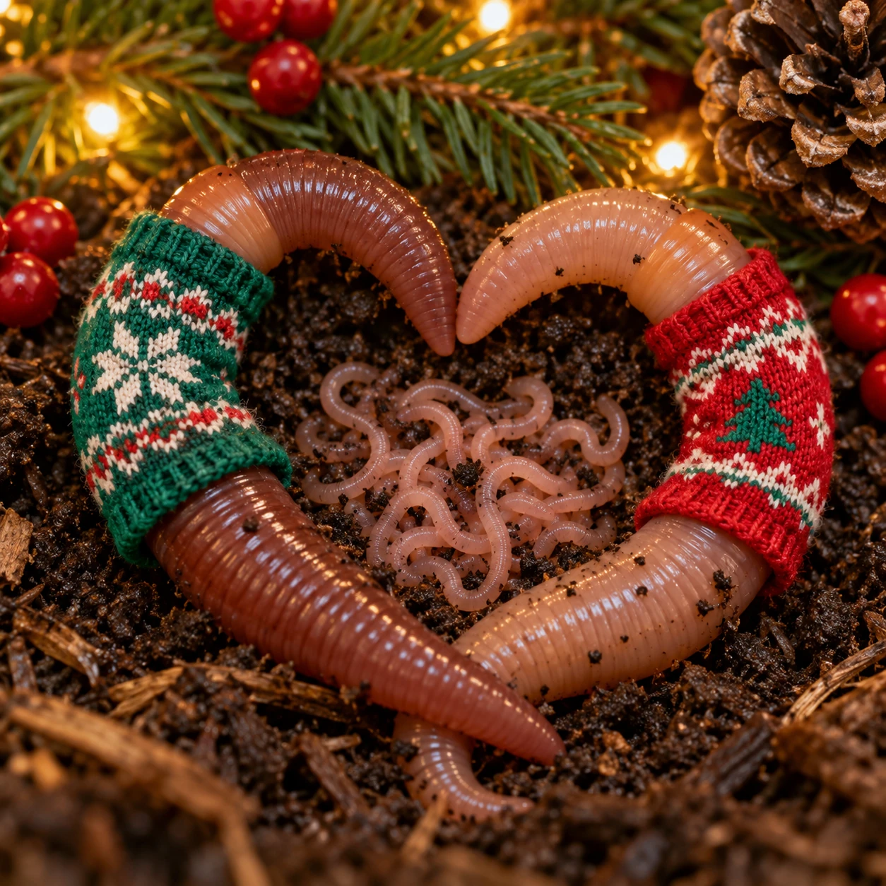

The Worm Family Christmas Newsletter

Dear Friends and Family,
Since this is our first Christmas card to you, we should probably introduce ourselves. We are the Worm Family, and we live together in a lovely, climate-controlled residence known locally as “the bin.”
It isn't much from the outside, but the neighborhood is quiet, the soil is good, and meals arrive right at our door.
MEET THE FAMILY
Our family has changed considerably over the years. Some of our relatives moved to the garden, where we understand they have considerably more room but must provide their own meals.
Others left without forwarding addresses. We don't like to talk about them. Those of us who remained have prospered. In fact, if you've seen our Christmas portrait, you've already met some of the children. There are more.
THE GREAT GARDEN MIGRATION
Early on, several members of the family were relocated to a place called the garden. We are told this was an opportunity for advancement. Apparently there is plenty of room, fresh air, and unlimited dirt. We have not heard from them, but mail service between the garden and the bin is notoriously unreliable.
THE ESCAPE
A few others chose to leave on their own. They got out. We don't know how. Management doesn't know how. Frankly, we'd rather not discuss it, as security has since been tightened.
FOOD & PERSONAL GROWTH
Those of us who stayed concentrated on family, food, and personal growth. And grow we did. Peach peels were particularly popular for a while, and we've recently developed an appreciation for rice. Our culinary standards remain modest: If it's damp, soft, and has begun to decompose, we'll probably give it a try.
HOME RENOVATIONS
We also underwent a major home renovation this year. Everything was removed. Everything. We were temporarily displaced, rinsed—which we do not recommend—and returned to find completely new bedding.
The humans seemed very pleased with themselves. We would have appreciated being consulted.
FAMILY LIFE: IT'S COMPLICATED
Fortunately, family life soon returned to normal. And by “normal,” we mean complicated. We understand there has been some curiosity about our domestic arrangements. We'd like to clear up one matter right now: Every adult member of our family is both male and female.
This makes filling out family trees unnecessarily difficult. We meet, exchange what needs exchanging, and go our separate ways. There are no custody hearings. No alimony. No arguments over who gets the good dirt.
BABIES. LOTS OF BABIES.
There are, however, babies. Lots of babies. The youngsters begin life so tiny and wispy that the humans sometimes have to look very closely to see us. This is undignified, but we tolerate it. Eventually the children grow, develop their own clitellums, and take their proper place in society.
OUR BRUSH WITH FAME
Our unusual family life recently attracted the attention of the entertainment industry. Someone decided our story had all the necessary ingredients for a continuing drama: Romance. Separation. Unexpected pregnancies. Mysterious disappearances. Generational change. And the occasional death.
And so we became the inspiration for As the Worm Turns. Fame has not changed us. Well… perhaps a little.
There was talk of an Emmy. We don't like to mention it. But there was talk.
OUR CHRISTMAS GIFT TO YOU
This Christmas, rather than exchanging expensive gifts—we have no money, pockets, or convenient access to retail establishments—we decided to give you something of ourselves. We are giving you our story.
▶ Hear our gift: As the Worm Turns
It is performed on our behalf because our vocal range is extremely limited.
We hope it makes you laugh. We hope you think of us occasionally when you see a garden, a bit of compost, or a particularly appealing peach peel.
And should you ever meet one of our relatives out in the world, please be kind. They may simply be looking for a new opportunity.
MERRY CHRISTMAS FROM OUR BIN TO YOURS
With love,
The Worm Family
P.S. Please don't send rice.
We have people for that. 😂